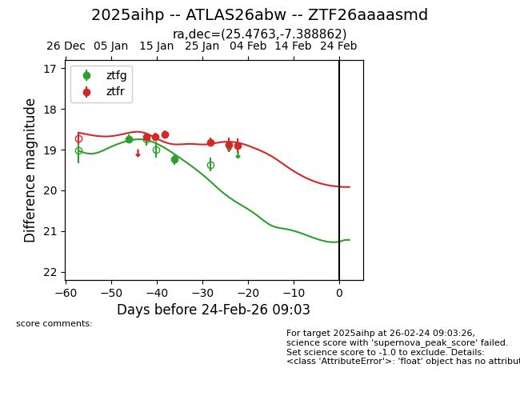
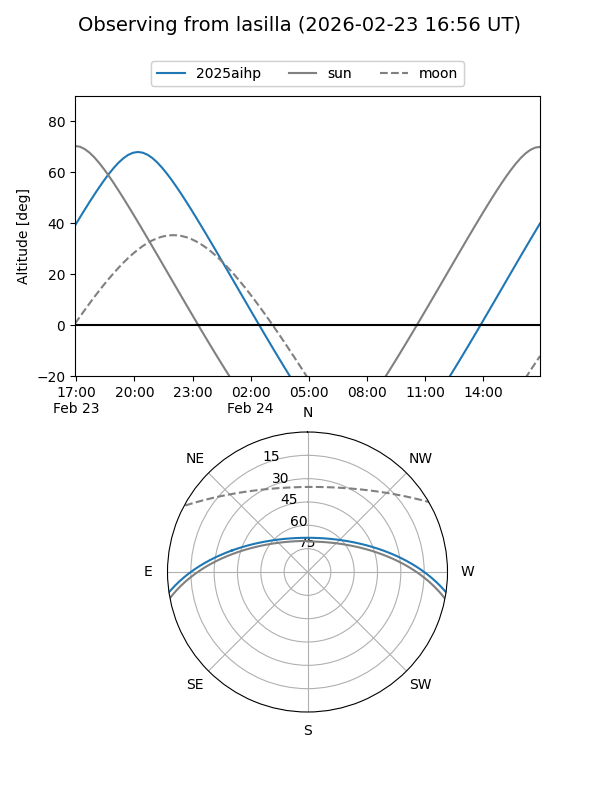
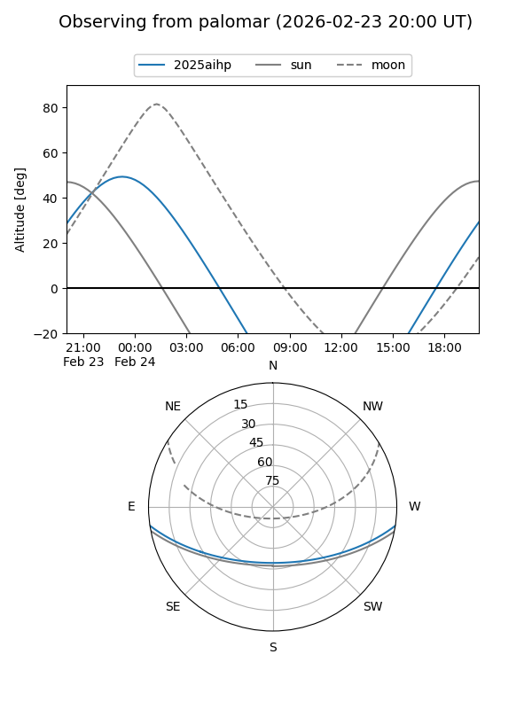
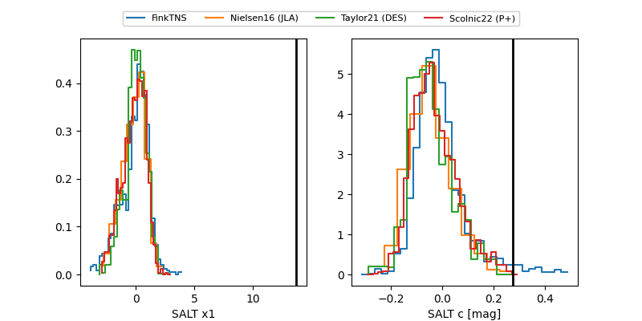

2025aihp
Target 2025aihp at 2026-01-09 12:10
Aliases and brokers:
FINK:
Lasair:
ALeRCE:
TNS:
YSE:
alt names
ZTF26aaaasmd (ztf,fink_ztf)
2025aihp (tns,yse)
ATLAS26abw (atlas)
Coordinates:
equatorial (ra, dec) = 25.4763,-7.38886
equatorial (HMS+DMS) = 01:41:54.32,-07:23:19.89
galactic (l, b) = (156.4681,-66.91528)
Flags:
Photometry:
last ztfg=18.74
1 ztfg detections
Lightcurve

Visibility


Additional plots
